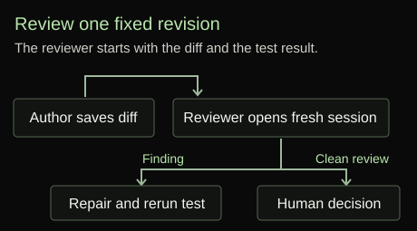

Methods from the field
Trace a technique from its first public account to a small experiment you can try.
On this page
Use the evidence each workflow leaves behind
Start with a small task and one artifact you can inspect. The source explains what a practitioner did. The exercise adapts that practice to a local fixture. The exercises were not executed. Time boxes are suggestions. Model and tool charges depend on your account.
Voice for exploration, typed review for boundary changes
On October 9, 2026, Simon Willison used Codex voice mode to develop newsletter features for his blog. The public pull request records eight merged commits. The voiced prototype covered public archive views and imports. In review, Willison saw a Git subprocess in an importer and switched to typed instructions for an API-based import from a private repository. [N01] [N02]
Try it. Give the agent two local newsletter exports and ask for a single archive page. State the fields and sort order aloud. Save a short typed requirement and review the first diff. For the exercise, replace the second export with an injected mock data loader. Keep authentication and external data out of the fixture.
Pass condition. Verify descending dates, duplicate handling and one missing source. Reject a shell dependency that the target environment cannot run. Record the boundary change in the PR. For a low-budget pass, use built-in dictation and a local text file with four records.
Give reviewers a short first screen
Willison's November 9, 2026 post describes a short opening paragraph for human reviewers, with the longer agent description inside HTML disclosure markup. Datasette PR #3052 gives a concrete case. The prior single-row table sent wide records off screen. The PR explains the issue and illustrates the new vertical field list. [N03] [N04]
Try it. Build a local mock with one 46-column record. Create a draft PR body with the user impact, a before-and-after screenshot and the checks that ran. Put longer implementation notes under <details>. Leave risks, unresolved checks and approvals visible.
Pass condition. Review at a narrow width. Confirm all field names and values remain readable. Ask someone to identify the defect and test result without opening the longer note. If they cannot, rewrite the first paragraph. For a low-budget pass, prepare a local Markdown draft and one paired screenshot.
Review from a distinct session branch
On January 31, 2026, Armin Ronacher described Pi's tree sessions and his review extension. The branch gives the reviewer a distinct context. The extension supports review of a diff, commit, uncommitted work or a remote PR. Ronacher asks it to flag newly added dependencies. His published review.ts gives the implementation. [N05] [N06] [N07]


Try it. Save the base SHA, candidate diff and acceptance criteria. Start a review branch or a fresh session with those inputs. Keep review read-only. Ask for evidence by file and line, plus a list of dependency changes. Bring confirmed findings back into the author session.
Pass condition. Add a needless dependency to a disposable patch and confirm the reviewer finds it. Check the candidate SHA before applying a fix. If the branches describe different diffs, repeat with the same patch. For a low-budget pass, use two ordinary chats and one small patch. No extension is required.
Turn a repeated error into a local instruction
On February 5, 2026, Mitchell Hashimoto described how he added repository instructions and programmed checks after repeated failures. Ghostty's version-pinned inspector instructions tell the agent where to find the generated C API and which reference examples to consult. The same file states there are no inspector unit tests. [N08] [N09]
Try it. In a fixture, add an obsolete header and a generated header with a different symbol. Document the canonical lookup in the closest applicable instruction file. Give the same task to a fresh session. After a repeat failure, add a local check for the declared symbol and its source path.
Pass condition. Require the generated path, exact symbol and recorded verification. If instructions mention tests that do not exist, remove that claim and record the available manual check. For a low-budget pass, change one instruction and rerun one prompt.
Give the agent a command with comparable output
On December 28, 2025, Peter Steinberger described starting many projects as CLIs so an agent could invoke the program and inspect its output. He also described maintaining subsystem notes. His public docs-list.ts indexes Markdown docs and their frontmatter so a task can locate relevant context. [N10] [N11]
Try it. Before adding a UI, expose one transform as a local command. Pass a three-row CSV and specify JSON output. Commit the expected JSON and keep one short doc that names the fixture and command. Later, run the UI against the same input.
Pass condition. Compare normalized output and exit status to the fixture. Add an invalid row and confirm the command reports the failure. If output is correct but the UI differs, inspect the UI adapter first. For a low-budget pass, use an existing command and one fixture. Steinberger's personal branch and model choices are separate from this method.
Persist the state between bounded attempts
Geoffrey Huntley's July 14, 2025 Ralph article describes a loop that rereads a plan and specifications from the repository. The RepoMirror hackathon report shows concrete scratch directories and task files. The writeup also describes uneven results across the ports. Its experiments do not establish production readiness. [N12] [N13]
Try it. Create two local conversion fixtures and a two-item plan. Keep source files immutable. For each attempt, choose one item, run its check and record failure output or the accepted result. Use one isolated workspace, no remote credentials and no automatic push.
Pass condition. Require a fixed external checker and a clean output diff. Stop after two attempts, a repeated failure, or any change to the checker. For a low-budget pass, restart once by hand and pass only the fixture, plan and last error.
Compare two working prototypes with the same task
In his April 2, 2026 Lenny's Podcast interview, Willison describes a shift from implementation to evaluation at 21:27. He describes prototyping several options before choosing. At 1:08:21, the episode covers red/green test-driven development. The episode gives practices and judgments from one practitioner. [N14] [N15]
Try it. Make separate local drafts for a filter drawer and an inline filter. Use the same data, viewport and task. Before you read results, define correct filter state, keyboard path and recovery after an empty result.
Pass condition. Record where each participant completes or abandons the task. Keep problems visible even if one draft passes its unit tests. If nobody can distinguish the variants on the task, use the simpler code. For a low-budget pass, compare two static mockups before you write interaction code.
Test resource loads and cross-tab state
On November 17, 2026, Willison described a failure in Datasette Lite. Its old HTML insertion path could display basic pages, but JavaScript-dependent features failed. The redesign uses a service worker and routes each iframe request to the tab that owns the worker session. The case exposes a missing test for static resources and session isolation. [N16]
Try it. Open two local browser sessions with different fake dataset names. Add one script-dependent button. Record main document, script and CSS requests. Reload one tab and check the other tab's dataset.
Pass condition. Both buttons work. Each tab keeps its own rows after reload. Reject a repair that only displays the initial HTML. For a low-budget pass, use two tabs and browser developer tools. Save the relevant network requests only.
Counterexample · Measure time to acceptance
METR's early-2025 randomized study reported that AI access increased task time by 19% among experienced open-source developers in its sample. The February 24, 2026 update describes tentative faster results with later tools, plus selection and time-measurement problems. The researchers describe the newer evidence as weak for the size of any gain. [N17] [N18]
Try it. Choose pairs of comparable local tasks before you assign the method. Write identical acceptance requirements. Log prompt time, implementation time, human review, repair and the final test result. Keep abandoned runs in the log.
Pass condition. Both methods must meet the same quality bar. If the agent produces a patch faster but increases review or repair time, record total time. For a low-budget pass, compare two matched tasks and treat the result as a local observation. Use more pairs before any broad claim.